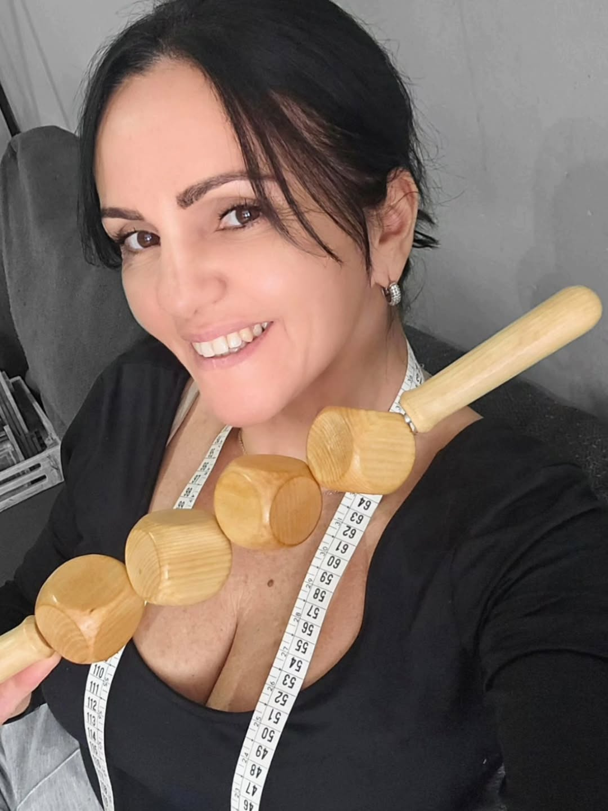
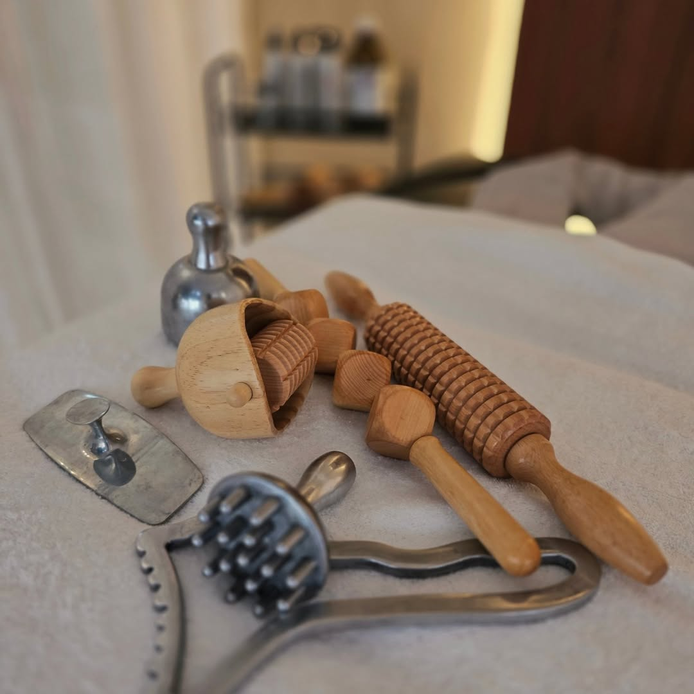

Relajante sueño profundo
Un masaje suave y envolvente con aceites esenciales para reducir el estrés, calmar la mente y favorecer el descanso.
Bienestar · Calma · Cuidado corporal
Un espacio para reconectar con tu cuerpo, calmar la mente y recuperar el equilibrio.
Sobre Masaya
Masaya nace como un refugio de calma en las Islas Canarias, un espacio pensado para detener el ritmo diario y volver al bienestar a través del masaje, la atención consciente y el cuidado personalizado.
Masaya es un refugio de bienestar creado para quienes buscan una pausa real, un espacio de calma y una experiencia de cuidado profundo. Cada sesión está pensada para acompañar al cuerpo a liberar tensiones, equilibrar la energía y recuperar una sensación natural de ligereza.
En Masaya combinamos técnicas de masaje relajante, descontracturante y terapias corporales personalizadas en un entorno sereno, cálido y acogedor. Nuestro objetivo es que cada persona encuentre su propio ritmo de descanso, conexión y renovación.
Nuestro espacio
Un ambiente cálido, natural y sereno, diseñado para que puedas relajarte desde el primer momento.
Tratamientos
Sesiones diseñadas para liberar tensiones, relajar la mente y acompañarte hacia una sensación profunda de equilibrio.
Un masaje suave y envolvente con aceites esenciales para reducir el estrés, calmar la mente y favorecer el descanso.
Tratamiento enfocado en zonas de tensión muscular, ideal para espalda, cuello, hombros y piernas.
Un viaje de doble acción: mientras tus músculos se liberan, tus sentidos se equilibran mediante aromaterapia y sonido de baja frecuencia.
Masaje enfocado en liberar la tensión acumulada y el peso diario, devolviendo ligereza y movimiento natural a tu postura.
Masaje ascendente diseñado para favorecer la circulación y aportar una agradable sensación de ligereza en las piernas.
Un viaje de desconexión a través de pases envolventes y presiones rítmicas sobre la base de tu cuerpo.
Un oasis para tu mente. Combinamos presiones en el cuero cabelludo con maniobras suaves sobre el rostro para disipar el estrés acumulado.
Saquitos de tela caliente con hierbas y aceites esenciales que relajan los músculos, favorecen la liberación de toxinas y equilibran la energía mediante presiones y aromas terapéuticos.
Técnica terapéutica con piedras volcánicas calientes para aliviar la tensión muscular. Ideal para soltar contracturas y calmar la ansiedad.
Masaje relajante con cañas de bambú que trabaja a nivel profundo para liberar el estrés, descontracturar los músculos y aliviar la tensión acumulada.
Galería
Detalles naturales y rincones pensados para tu bienestar.


Reserva y contacto
Reserva tu momento de bienestar. Escríbenos o llámanos para encontrar el tratamiento que mejor se adapta a ti.
Ubicación
Estamos en las Islas Canarias.